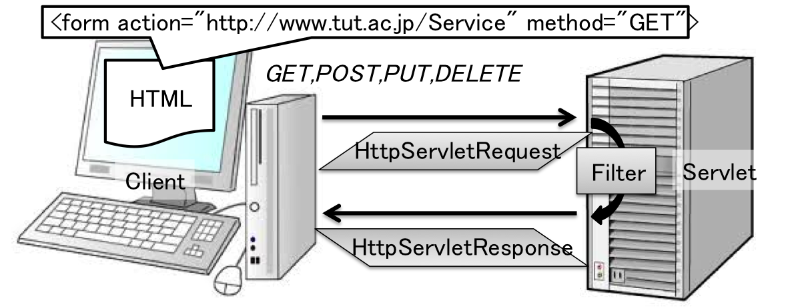
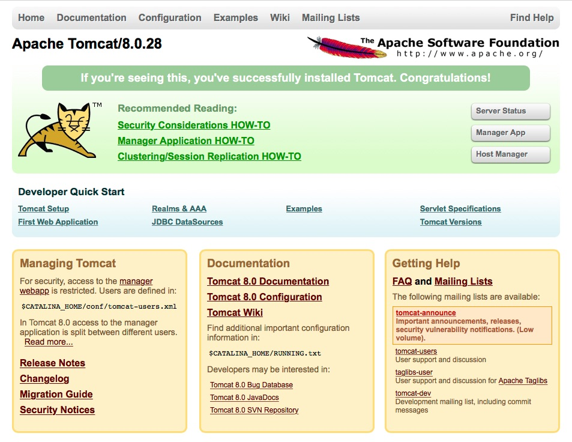
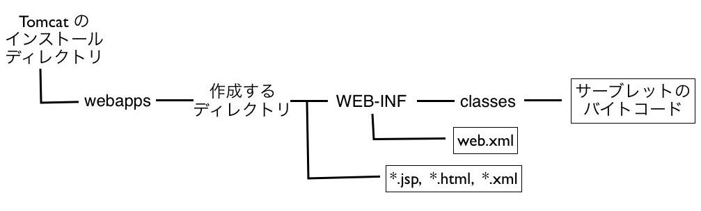

サーブレット
サーブレット（Servlet）とは、Webサーバ上で実行されるモジュール(部品)化されたJavaプログラムであり、Webサーバの機能拡張に用いられる。
下図に示す様に、Webブラウザで閲覧されているHTML文章の中からサーブレットと通信する命令（GET,POST,PUT,DELETE）が送信され、サーブレットはその命令を HttpServletRequest クラスのオブジェクトとして受け取る。 そして、Filter 等の処理を経て返すメッセージを HttpServletResponse クラスのオブジェクトとしてクライアントに送信する。
ちなみに、アプレット（Applet）は、クライアントで実行されるJavaプログラムである。
CGI 等のサーバサイドプログラムとは異なり、一度呼び出されるとメモリに常駐するので高速な処理が可能である。また、データの永続的な扱いが可能なので、情報共有にも適している。
Socket 通信が TCP 層でのデータ送受信であるのと比較して、Servlet は HTTP 層でのデータ送受信となる。
Apache Tomcat を用いたサーバ環境の準備
本演習では、サーブレットの開発環境としてオープンソースの Tomcat を用いる。以下の手順で環境を整える。- apache-tomcat-8.0.28.zipファイルを自分の作業ディレクトリにコピーして解凍する。ただし、コピーする作業ディレクトリーには実行のためのパスが通っていなければならない（したがって、ホームディレクトリ下で解凍するのが安全）
- ターミナルを起動し、生成された tomcat ディレクトリに cd 命令で移動する
- cd bin でシェルスクリプトファイルが格納されている bin フォルダに移動する
- chmod +x *.sh を実行し、.sh の拡張子を有する全ファイルに実行権を付与する（この権限変更は ls -l 命令で確認できる）
- ./startup.sh を実行し、tomcat を起動する
- ブラウザを立ち上げ、URLの入力欄に http://localhost:8080/ を入力する（実際には、webapps/ROOT フォルダの下にある index.html が呼び出される）
-
以下の表示：
 が出力されたら、サーブレットを起動する環境が作成されている - 上記の画面が表示されなかった場合にはリブート（./shutdown.sh を実行してから再度./startup.sh を実行）してみる。
- Tomcat を終了する際には、ターミナルで ./shutdown.sh を実行する
Tomcat のプログラムは、Web クライアントからのリクエストを待ち受けて Web ページを送信する、Web サーバーである。
捕捉：任意の場所で Tomcat を解凍する場合
Tomcat の実行環境を置くフォルダのパスを環境変数 CATALINA_HOME に設定する必要がある＜＜解説サイト（Windows 版）はこちら＞＞。
Mac の開発環境での設定方法は以下の通り：
- ターミナルを開き、export を用いて環境変数 CATALINA_HOME を設定する
export CATALINA_HOME=/ファイルを解凍したフォルダの絶対パス/apache-tomcat-8.0.28
- 環境変数が正常に設定された事を確認するには，以下を実行する。
echo $CATALINA_HOME
bin/catalina.sh のシェルスクリプトファイルはサーブレットの起動時に実行されるので、テキストエディタで このファイルに上記の export 命令を追加しておけば、環境変数の設定を自動化できる。
サーブレットの構築方法
Step 1. サブディレクトリの作成
apache-tomcat-8.0.28.zip を解凍すると同名のフォルダが作成されるが、サーブレットを作成して配備するディレクトリ（フォルダ）があらかじめ決められており、
下図で示される様にwebapps ディレクトリの下に、新規に作成するサーブレットプログラム用のディレクトリを作成する（名称は任意に設定できる）。

Tomcat 開発環境のディレクトリ構成
この図に示されている様に、作成したディレクトリの下に WEB-INF と名付けられるディレクトリと、さらにその下に classes と名付けられるディレクトリを作成する。
デフォルトで作成されている ROOT フォルダの内容を参照する（ただし、classesフォルダは作成されていない）。
Step 2. クラス登録ファイル（web.xml）の作成
利用するサーブレットのクラスや名前を設定する、web.xml と名付けられるの XML 形式のテキストファイルを以下の様に作成し、WEB-INF ディレクトリ下に配備する。（<!-- と --> に囲まれた部分はコメントであり、システムからは読み飛ばされる）
<?xml version="1.0" encoding="ISO-8859-1"?> <web-app xmlns="http://java.sun.com/xml/ns/javaee" xmlns:xsi="http://www.w3.org/2001/XMLSchema-instance" xsi:schemaLocation="http://java.sun.com/xml/ns/javaee http://java.sun.com/xml/ns/javaee/web-app_2_5.xsd" version="2.5"> <display-name>初めてのサーブレット</display-name> <description>サーブレットを初めて実装するためのサンプルプログラム</description> <servlet> <servlet-name>MyFormReceiver</servlet-name> <!-- web.xml内で使用するサーブレット名（任意に設定可能） --> <servlet-class>FormReceiver</servlet-class> <!-- 呼び出すサーブレットのクラス名（パッケージを用いている場合には、そのパッケージ名も付記する） --> </servlet> <servlet-mapping> <servlet-name>MyFormReceiver</servlet-name> <!-- サーブレットの名前（<servlet>内の<servlet-name>に対応） --> <url-pattern>/Form</url-pattern> <!-- ブラウザで指定するURL（のマッチ条件）必ず、／から始まる！ --> </servlet-mapping> </web-app>
上記は、サーブレットのプログラムを FormReceiver と名付けられるクラスで構築した場合の作成例である。
＜＜Web アプリケーションの設定に関する詳細へのリンク＞＞
Step 3. サーブレットのクラス（例：FormReceiver.class）の配備
サーブレットの実行ファイル（.class のバイトコード）は、WEB-INF の下に作成したディレクトリ classes の下に配置する （ただし、ソースファイル（.java）はどの場所においても良い）。
実行ファイルの作成は、通常のクラスと同様に javac でコンパイルするが、lib ディレクトリの下にあるサーブレットのライブラリ用のアーカイブ（servlet-api.jar）を読み込むために、以下の様にコンパイルを実行する（例：Tomcat のインストールディレクトリの直下に置かれている FormReceiver.java から作成する場合）
javac -encoding UTF-8 -cp ./lib/servlet-api.jar FormReceiver.java
eclipse でコンパイルする場合、プロジェクトを選択した状態で右ボタンを押して、「ビルドパスを構築」→ 「外部アーカイブを追加」を選択し、lib 下の servlet-api.jar を開く
Step 4. サーブレットを呼び出すクライアント（.html ファイル）の配備
Step 3. で作成したサーブレットを呼び出すための html ファイルを作成する（クライアントのファイルなので、配置場所は任意に選択できる）。
サーブレットが xml ファイルや jsp (JavaServer Pages) ファイルを使用する場合には、それらを webapps 下に新規に作成したディレクトリ下に配置する必要がある（上図参照）。
サーブレット・プログラムの作成
クライアントから送信されてくるテキストを受け取り、単純なメッセージを返す機構のプログラムを以下に示す。
フォーム入力を受け取るサーブレットの作成例import java.io.*; import javax.servlet.*; import javax.servlet.http.*; public class FormReceiver extends HttpServlet { // GET リクエストを受け取った際に呼び出されるメソッドをオーバーライドする public void doGet (HttpServletRequest request, HttpServletResponse response) throws ServletException { try { String tmp = request.getParameter("message"); // 送信されたメッセージの取得 String msgStr = new String(tmp.getBytes("8859_1"), "UTF-8"); // 日本語を取得できる様にする response.setContentType("text/html; charset=UTF-8"); //コンテンツタイプの設定 //HTML文書の書き出し PrintWriter pw = response.getWriter(); if(msgStr.length() != 0) { pw.println("<html><body><center>" + msgStr + "を受け取りました</center></body></html>"); } else { // フォームに入力が無かった場合 pw.println("<html><body><center><h2>エラー</h2>テキストを入力してください</center></body></html>"); } } catch(Exception e){ e.printStackTrace(); } } }
- サーブレットの実装には、HttpServlet クラスを継承する
- サーブレットの実装には、少なくとも以下に挙げられている１つのメソッドをオーバーライドする必要がある
- doGet：URI で識別される (エンティティ形式の) 情報を取得する
- 最も頻繁に使用されるメソッド
- HTML文書や画像ファイル等の取得
- CGI等によって生成されたリソース
- doPost：URI で識別されるリソースに対して、リクエストに同封されるエンティティを送信する
- 掲示板、ニュースグループ、メーリングリスト等へのメッセージの投稿
- データベースに対する追加操作
- 既存リソースへの注釈
- doPut：ローカルにあるファイルをサーバに転送する
- POSTでは URI は「リクエストを処理する場所」を指すが、PUTでは「リソースが生成される場所」を指す
- セキュリティの観点から、GETやPOSTほど広くは利用されない
- doDelete：URI で指定したリソースを削除
上記のメソッド群を簡単にまとめると、URI で指定したリソース対して、GET（取得）、POST （新規作成）、PUT（更新）、DELETE（削除）するものであり、GET はリソースに副作用を与えない。
サーブレットを呼び出す HTML ファイルの作成
サーブレットが html ファイルから変数の値を添えて呼び出され、サーブレット内での計算結果を同じ html ファイルに返す処理は以下の流れとなる。
- html の対話部品（form タグ）からサーブレットを（form タグ内の action="..." で URI を指定して）呼び出す
- サーブレットは html で設定された変数を引数 HttpServletRequest request で受け取る
- サーブレット内での処理結果を、引数 HttpServletResponse response に格納して呼び出し元の html に返して表示する
<html> <head>
<meta http-equiv="Content-Type" content="text/html; charset=UTF-8" />
</head> <body><center> <h2>入力フォーム</h2> <hr/> テキストを入力して送信ボタンを押して下さい<br/><br/> <form action="http://localhost:8080/MyServlet/Form" method="GET"> <!-- http://localhost:8080/webapps下で作成したフォルダの名称に引き続き<pattern-url>で指定されたURLのマッチ条件 --> <input type="text" name="message"/> <!-- 送信するメッセージを入力する領域 --> <input type="submit" value="送信"/> <!-- 送信を実行するボタン --> </form> </center></body></html>
上記のURL指定は、MyServlet という名前のフォルダを webapps 下に作成し、web.xml 内の <url-pattern>内を
/Form と指定した場合に相当する。
HTML文書での入力フォームの作成に関しては
こちらを参照する事。
サーブレットの実行
サーブレットを実際に実行させるには、サーブレットを実行するサーバーを起動する必要がある。
- ターミナルを用いて、Tomcat インストール・ディレクトリの下の bin ディレクトリにある startup.sh プログラムを実行する。
実行例：cd apache-tomcat-8.0.28 ./bin/startup.sh
- サーブレットを呼び出す html ファイルをブラウザで読み込む（当該 html ファイルを単にクリックしても良い）。
- サーブレットのプログラム（.class）や設定ファイル（web.xml）を更新した際には、ターミナルを用いて以下の要領で再起動（終了＋起動）を実行する。
./bin/shutdown.sh ./bin/startup.sh.html のみを更新した際には、上記の再起動は不要である。
セッション管理
Webサイトを構築する際には、サイトを訪問するユーザを個別に管理する必要がある。サーブレットでは、セッションという仕組みを導入してユーザを管理できる。
セッション管理のプログラム例
import java.util.*;
import java.io.*;
import javax.servlet.*;
import javax.servlet.http.*;
public class SessionManager extends HttpServlet {
public void doGet(HttpServletRequest request, HttpServletResponse response) throws ServletException {
try {
HttpSession hs = request.getSession(true); //セッションの取得
Integer cn = (Integer) hs.getAttribute("count"); //セッションに設定されている属性値 count の値の取得
Date dt = (Date) hs.getAttribute("date"); //セッションに設定されている属性値 date の値の取得
String str1, str2;
if (cn == null) { // count の属性値が設定されていない（始めて呼び出された）場合
cn = new Integer(1);
dt = new Date();
str1 = "はじめまして。";
str2 = "";
}
else { // count の属性値が設定されている（一度は呼び出された）場合
cn = new Integer(cn.intValue() + 1);
str1 = cn + "回目のおこしですね。";
dt = new Date();
str2 = "（前回：" + dt + ")";
}
hs.setAttribute("count", cn); // セッションに属性値 count の値を設定
hs.setAttribute("date", dt); // セッションに属性値 date の値を設定
//コンテンツタイプの設定
response.setContentType("text/html; charset=UTF-8");
//HTML文書の書き出し
PrintWriter pw = response.getWriter();
pw.println("<html><body><center><h2>ようこそ</h2><hr />" +
str1 + "<br/>" +
str2 + "<br/>" +
"</center></body></html>");
}
catch(Exception e){
e.printStackTrace();
}
}
}
フィルタ（Filter）の使用
リクエストを受け付けてサーブレットで処理をする前後に指定した処理を実行させる、Filter と呼ばれる機能が利用できる。
このフィルタを利用するには、実行環境を設定する web.xml ファイルに、以下の例の様に登録する必要がある。
web.xml 内でのフィルタの登録例
...
<filter>
<filter-name>MyFilter</filter-name> <!-- web.xml 内で使用するフィルタ名 -->
<filter-class>SampleFilter</filter-class> <!-- フィルタを実装したクラス名 -->
</filter>
<filter-mapping>
<filter-name>MyFilter</filter-name> <!-- 呼び出すフィルタ名 -->
<url-pattern>/Form</url-pattern> <!-- フィルタが実行される URL のマッチ条件 -->
</filter-mapping>
...
以下にフィルタの作成例と、フィルタが実行されるサーブレットの作成例を示す
サーブレットの呼び出しの前後に処理される Filter プログラム
import java.util.*;
import java.io.*;
import javax.servlet.*;
import javax.servlet.http.*;
public class SampleFilter implements Filter {
public void doFilter(ServletRequest request, ServletResponse response, FilterChain chain) throws IOException, ServletException {
response.setContentType("text/html; charset=UTF-8"); //コンテンツタイプの設定
// HTML文書の書き出し
PrintWriter pw = response.getWriter();
pw.println("<html><body><center><h2>こんにちは</h2><hr/>"); // サーブレットの処理前に呼び出される
chain.doFilter(request, response); // ここで、web.xml に登録されている次のフィルタか、次が無ければサーブレットの処理が呼び出される
pw.println("<hr/>ありがとうございました。</center></body></html>"); // サーブレットの処理後に呼び出される
}
public void init(FilterConfig filterConfig) {}
public void destroy() {}
}
練習問題
サーブレット FormReceiver から上記のフィルタ SampleFilter を呼び出してみる。ただし、FormReceiver.java 内の
if(msgStr.length() != 0) {
pw.println("<html><body><center>" + msgStr + "を受け取りました</center></body></html>");
}
else { // フォームに入力が無かった場合
pw.println("<html><body><center><h2>エラー</h2>" +
"テキストを入力してください</center></body></html>");
}
の部分は、
if(msgStr.length() != 0) {
pw.println("<center>" + msgStr + "を受け取りました</center>);
}
else { // フォームに入力が無かった場合
pw.println("<center><h2>エラー</h2>" +
"テキストを入力してください</center>");
}
に置き換える（その理由は、各自で考える）。
認証の要求
設定ファイル web.xml の編集により Web ページへのアクセスを制限できる。
<?xml version="1.0" encoding="ISO-8859-1"?>
<web-app ...>
...
<security-constraint>
<web-resource-collection>
<web-resource-name>ReqAuthentification<web-resource-name>
<url-pattern>/ReqAuthentification</url-pattern> <!-- 制限するURLのマッチ条件 -->
</web-resource-collection>
<auth-constraint>
<role-name>admin</role-name> <!-- 認証を許可する名前 -->
</auth-constraint>
</security-constraint>
<login-config>
<auth-method>BASIC</auth-method> <!-- 認証方法-->
</login-config>
<security-role>
<role-name>admin</role-name> <!-- 認証を許可する名前 -->
</security-role>
...
</web-app>
認証を呼び出すサーブレットの例
import java.util.*;
import java.io.*;
import javax.servlet.*;
import javax.servlet.http.*;
public class ReqAuthentification extends HttpServlet {
public void doGet(HttpServletRequest request, HttpServletResponse response) throws ServletException {
try{
//コンテンツタイプの設定
response.setContentType("text/html; charset=Shift_JIS");
//HTML文書の書き出し
PrintWriter pw = response.getWriter();
pw.println("<html><body><center>¥n" +
"<h2>おめでとうございます。</h2>¥n" +
"<hr/>認証に成功しました。<br /></center></body></html>¥n");
}
catch(Exception e){
e.printStackTrace();
}
}
}
認証の際に用いられるユーザ名とパスワードは、conf フォルダにある、tomcat-users.xml を編集する。
tomcat-users.xml の設定例<tomcat-users> <role rolename="admin"/> <role rolename="user"/> <user username="cat" password="tomcat" roles="admin"/> <user username="dog" password="tomcat" roles="admin,user"/> </tomcat-users>
JSP（サーブレットプログラムの簡略な作成方法）
JSP（JavaServer Pages）
サーブレットの出力結果を Web ページとして表示するために、上記の例では pw.println で HTML 文章を出力したが、Java プログラムと HTML の記述が混在しているので、記述量の増加に伴いプログラム読み難くなってしまう。したがって、HTML 文章の中に Java のコードを埋め込むために、JSP (JavaServer Pages）と呼ばれる Web サーバ上のプログラム開発環境が用意されている。
まず最初に、HTML のフォームから JSP を呼び出すプログラムの作成例を示す。
JSPTest.html<html> <head> <meta http-equiv="Content-Type" content="text/html; charset=UTF-8" /> <title> JSP サンプル</title> </head> <body><center> <h2>ようこそ</h2> <hr/> お選びください。<br/> <br/> <form action="http://localhost:8080/myJSP/JSPSample.jsp" method="GET"> <input type="text" name="cars"/> <input type="submit" value="送信"/> </form> </center></body> </html>
次に、上記のHTML から呼び出され、フォームに入力されたデータを表示する jsp のプログラム作成例を示す（ただし、このファイルは myJSP と名付けられたディレクトリ下に置かれているものとする）。
JSPSample.jsp<%@ page contentType="text/html; charset=UTF-8" %>
<%
String tmp = request.getParameter("cars");
String carname = new String(tmp.getBytes("8859_1"), "UTF-8");
%>
<html>
<head>
<title><%= carname %></title>
</head>
<body>
<center>
<h2><%= carname %></h2>
<%= carname %>
のお買い上げありがとうございました。<br/>
</center>
</body>
</html>
- JSP のプログラムは拡張子に .jsp を付け、コンパイルする必要が無い
- JSP のコードは最初に実行された際に、サーブレットのコードに自動的に変換される
- JSP では、HTML 文章内に Java のソースコードを埋め込む事ができる
- Java のコードを埋め込む部分は、<% で始まり %> で終わる
- <jsp: Java のコード /> という書式でも良い
- HTML 文書内に Java の式を埋め込む際には、<%= と %> で囲む
課題６．サーブレットを用いたデータベース検索
課題２で作成したクラスで car.csv を読み込み、２個の検索条件と論理条件（AND または OR）を HTML のフォームで指定して、その検索結果を一覧表の形式（できれば、table タグ等を用いる）で表示する機能を実装する（ただし、JSP を用いて開発しても良い）。
今回の課題は、自席の計算機でプログラムを実際に動作させる事で課題提出とする（ただし、ソースプログラム（*.java）のみを Moodle で提出する）。
HTMLフォームの実装例
【オプション：時間に余裕がある人は挑戦しよう！】
サーブレット（または、jsp）を用いたWebアプリケーションを開発する。テーマは機能は自由に設定する。優秀と認められた作品は、最終回の講義でデモンストレーションをお願いすることがある。この自由課題に挑戦した人は、上記課題の提出は免除される。提出は同様に、自席の計算機でプログラムを実際に動作させ、ソースコードのみを Moodle で提出する。
補足：JavaBeans
JavaBeans とは、Eclipse 等の開発ツールや Tomacat 等の Web コンテナが事前知識無しで扱える、ソフトウェア・コンポーネントであり、 普通のクラスとは違って、以下の規約に従う様に設計されたクラスを指す。
JavaBeans 作成時の要件
- 引数なしのpublicコンストラクタでオブジェクトを生成できる
- 必要に応じて「プロパティ」「イベント」「メソッド」を備える
- イベントとメソッドは主として GUI 開発に用いられる
- プロパティとは、フィールドを private 宣言して、アクセッサ（setter, getter）によりカプセル化したもの
- getter は、public <プロパティの型> get<プロパティの名前> () で定義する
- setter は、public void set<プロパティの名前> (<プロパティの型> ＜引数の名前＞) で定義する
- 必要に応じて「Serializable」インターフェイスを実装する
- 必ず何らかのパッケージにまとめる
第３回で学んだ Swing も JavaBeans コンポーネントの一種である。
JavaBeans の実装例
package mybeans;
import java.io.*;
public class CarBean implements Serializable {
private String carname; // プロパティ
private String cardata; // プロパティ
public CarBean() {
carname = null;
cardata = null;
}
// setter メソッド
public void setCarname(String cn) {
carname = cn;
}
// getter メソッド
public String getCardata() {
return cardata;
}
public void makeCardata() {
cardata = "車種:" + carname;
}
}
上記の JavaBeans に値を設定するサーブレットの作成例と、そこからデータを受け取る JSP の作成例を以下に示す。
JavaBeans に値を設定するサーブレット
import mybeans.*;
import javax.servlet.*;
import javax.servlet.http.*;
public class CarBeanServlet extends HttpServlet {
public void doGet(HttpServletRequest request, HttpServletResponse response)
throws ServletException {
try {
//フォームデータの取得
String tmp = request.getParameter("cars");
String carname = new String(tmp.getBytes("8859_1"), "JISAutoDetect");
//Beanの作成
CarBean cb = new CarBean();
cb.setCarname(carname);
cb.makeCardata();
//リクエストに設定
request.setAttribute("cb", cb);
//サーブレットコンテキストの取得
ServletContext sc = getServletContext();
//リクエストの転送
if(carname.length() != 0) {
sc.getRequestDispatcher("/CarBeans.jsp").forward(request, response);
}
else{
sc.getRequestDispatcher("/error.html").forward(request, response);
}
}
catch(Exception e){
e.printStackTrace();
}
}
}
JavaBeans からデータを受け取る JSP（CarBeans.jsp）
<%@ page contentType="text/html; charset=Shift_JIS" %> <jsp:useBean id="cb" class="mybeans.CarBean" scope="request"/> <html><head> <title>サンプル</title></head> <body><center><h2>御礼</h2> <jsp:getProperty name="cb" property="cardata"/> のお買い上げありがとうございました。<br/> </center></body> </html>